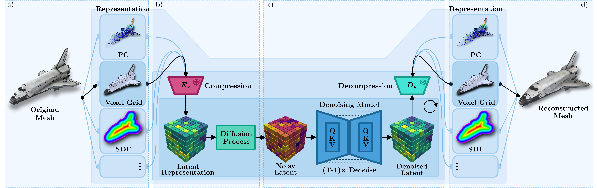
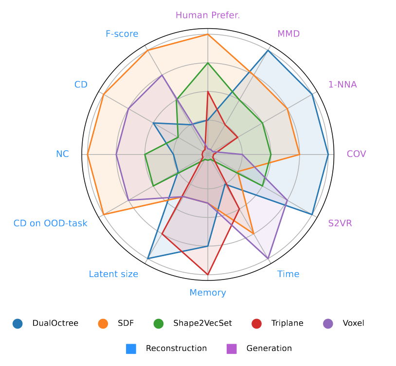
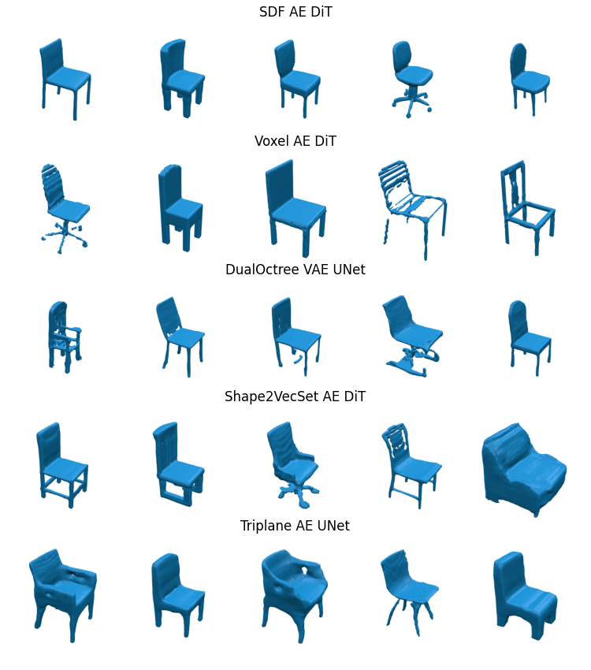

Unifi3D Compares Tensorial Representations within 3D Generative Pipelines
Abstract
Unifi3D is a unified framework for evaluating the reconstruction and generation performance of 3D representations. We compare these representations based on multiple criteria: quality, computational efficiency, and generalization performance. Beyond standard model benchmarking, our experiments aim to derive best practices over all steps involved in the 3D generation pipeline, including preprocessing, mesh reconstruction, compression with autoencoders, and generation. Our findings highlight that reconstruction errors significantly impact overall performance, underscoring the need to evaluate generation and reconstruction jointly.
Key Contributions
Unified Comparison
First comprehensive comparison of 6 tensorial 3D representations (SDF, Voxel, Triplane, NeRF, DualOctree, Shape2VecSet) within a single framework.
Pipeline Analysis
Systematic study of all pipeline components: preprocessing, mesh extraction, autoencoder compression, and diffusion-based generation.
Best Practices
Actionable insights on representation selection, architecture choices, and training strategies for optimal 3D generation quality.
Method Overview

Diffusion-based 3D generation pipelines share a common structure that we systematically analyze:
- Preprocessing: The input mesh is transformed into a suitable 3D representation (SDF, Voxel, Triplane, NeRF, DualOctree, or Shape2VecSet).
- Compression: An autoencoder is pre-trained to compress the representation into a compact latent vector.
- Generation: A diffusion model (U-Net or DiT) is trained to generate new latents by learning to denoise.
- Reconstruction: The latent is decoded back to the target representation and converted to a mesh using Marching Cubes or similar algorithms.
3D Representations Compared
We evaluate six major tensorial representations used in modern 3D generative models:
SDF Grid
Dense signed distance field on a regular 3D grid. Excellent reconstruction quality and out-of-distribution generalization.
Voxel Grid
Binary or continuous occupancy grid. Simple but effective, with good balance of quality and efficiency.
Triplane
Three axis-aligned feature planes. Memory efficient but struggles with out-of-distribution shapes.
NeRF
Neural radiance field with density prediction. Flexible but lower reconstruction fidelity.
DualOctree
Hierarchical adaptive octree structure. Best generation metrics but limited generalization.
Shape2VecSet
Cross-attention based point set encoding. Resolution-independent with good quality.
Key Results
Unconditional Generation (ShapeNet)
Best per-representation models evaluated on ShapeNet categories. COV (Coverage) measures diversity, MMD (Minimum Matching Distance) measures quality, and 1-NNA measures distribution similarity (optimal at 0.5).
| Method | COV ↑ | MMD ↓ | 1-NNA → 0.5 |
|---|---|---|---|
| DualOctree (VAE, U-Net) | 0.365 | 0.031 | 0.824 |
| SDF (AE, DiT) | 0.357 | 0.032 | 0.860 |
| 3DShape2VecSet | 0.344 | 0.033 | 0.864 |
| Triplane (AE, U-Net) | 0.297 | 0.036 | 0.921 |
| Voxel (AE, DiT) | 0.319 | 0.040 | 0.937 |


Reconstruction Quality (ShapeNet)
Average over airplane/car/chair (F-score ↑, CD ↓, NC ↑). OOD generalization shown for Chair→Airplane.
| Representation | F-score | CD (×1e−4) | NC | OOD F-score | OOD CD | OOD NC |
|---|---|---|---|---|---|---|
| SDF AE | 88.434±6.58 | 0.012±0.00 | 0.827±0.06 | 91.123±6.02 | 0.010±0.01 | 0.843±0.05 |
| Voxel AE | 85.666±10.54 | 0.016±0.01 | 0.787±0.06 | 85.602±9.48 | 0.017±0.01 | 0.800±0.05 |
| Shape2VecSet AE | 79.37±17.04 | 0.023±0.02 | 0.776±0.07 | 75.338±8.87 | 0.022±0.01 | 0.717±0.07 |
| Triplane AE | 66.445±16.06 | 0.028±0.02 | 0.759±0.08 | 41.69±11.57 | 0.073±0.03 | 0.688±0.07 |
| DualOctree VAE | 76.122±13.44 | 0.020±0.01 | 0.766±0.07 | 48.38±11.39 | 0.047±0.02 | 0.677±0.08 |
| NeRF AE | 58.44±13.22 | 0.034±0.02 | 0.723±0.07 | 26.229±11.64 | 0.107±0.04 | 0.589±0.05 |
Key Findings
Generation Quality
- DualOctree achieves best generation metrics (COV: 0.365, 1-NNA: 0.824)
- DiT architectures generally outperform U-Net for generation
- VAE regularization improves generation quality over standard AE
Reconstruction Quality
- SDF provides best reconstruction fidelity (F-score: 88.4)
- SDF and Voxel show excellent out-of-distribution generalization
- Triplane and DualOctree struggle with unseen shape categories
Critical Insight
Reconstruction errors propagate through the entire pipeline. A representation with poor reconstruction will underperform in generation regardless of the diffusion model quality.
Trade-offs
No single representation dominates all metrics. SDF offers the best balance for applications requiring both quality and generalization.
Generated 3D Samples
Examples of unconditionally generated 3D meshes from our best-performing models.
Citation
@article{unifi3d,
title={{Unifi3D: A Study on 3D Representations for Generation and Reconstruction in a Common Framework}},
author={Wiedemann, Nina and Liu, Sainan and Leboutet, Quentin and Gao, Katelyn and Ummenhofer, Benjamin and Paulitsch, Michael and Yuan, Kai},
journal={Transactions on Machine Learning Research},
year={2025},
url={https://openreview.net/forum?id=GQpTWpXILA},
}